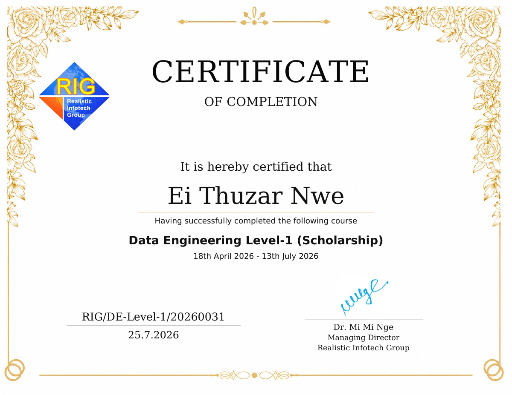
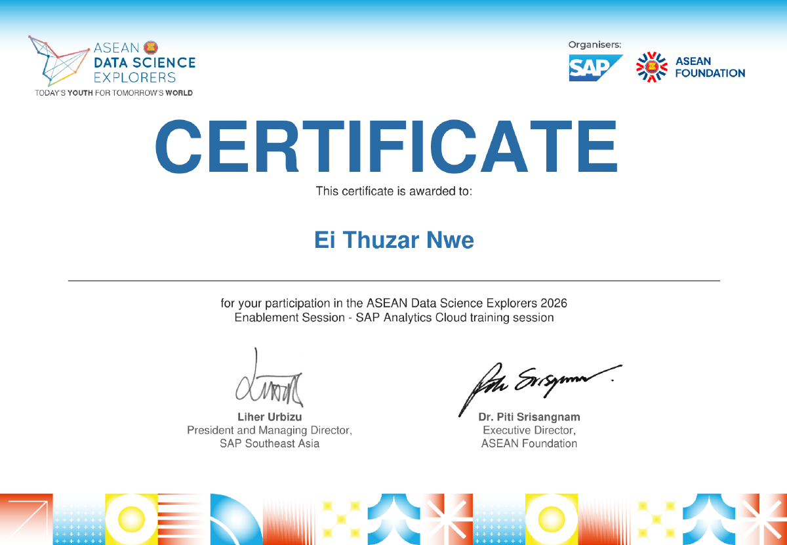

Open to internship opportunities
Hi, I'm Ei Thuzar Nwe.
Final-Year Computer Science & Engineering Student
I’m learning to build useful software and turn data into clear insights. I enjoy exploring both sides of technology—from web development to data analysis—and I’m looking for opportunities to learn, contribute, and grow with a team.
Your CV is ready to download as a PDF.
Ei Thuzar NweComputer Science & Engineering
01 / About me
Building my foundation.
Finding my direction.
I’m a Computer Science and Engineering student at the Myanmar Institute of Information Technology (MIIT), where I’ve built an academic foundation in programming, web technologies, databases, and data-related subjects.
I’m especially interested in how software and data can work together to solve practical problems. Through coursework and team projects, I’m continuing to strengthen my technical skills and learn how to explain my work clearly.
My next goal is to join an internship where I can contribute as a learner, work with supportive teammates, and gain experience building real-world solutions.
CURRENT FOCUSSoftware & Data
ENGLISHIntermediate
GRADUATIONExpected 2027
02 / Technical toolkit
Skills I'm building
A practical foundation from university coursework and personal learning. I’m continuing to improve through hands-on work.
Web development
Data & databases
Data science foundations
Systems & tools
Skills are listed as areas of study and practice, not professional proficiency ratings.
03 / Selected work
Projects & coursework
A mix of team projects and academic practice. Repository links and detailed contributions will be added as they’re confirmed.
TEAM PROJECT 01
Web + smart system concept✦ First Prize · MIIT Hackathon 2025
Smart Streetlight System with Website
A team project combining a smart streetlight concept with a website interface. The project explored how a web interface could support a smarter approach to street lighting.
Problem & approach
Explore a more responsive street-lighting concept and present related information through a website.
My contribution
To be added: your specific tasks and responsibilities.
TEAM PROJECT 02
MOTION
TEMP
SOUND
Embedded systems · Academic
Arduino-Based Smart Assistant Bot
A team project involving an Arduino-based assistant bot with motion, temperature, and sound sensors.
Known components
Arduino platform, motion sensor, temperature sensor, and sound sensor.
My contribution
To be added: your specific tasks and responsibilities.
COURSEWORK 03
FROM RAW DATA TO INSIGHT
Data analysis · Academic
Data Analysis Coursework
Practice with preparing datasets, exploring patterns, and communicating findings through descriptive analysis and visualizations.
Work areas
Data cleaning, preprocessing, exploratory data analysis, and visualization.
Dataset & results
To be added after the notebook and findings are confirmed.
COURSEWORK 04
DATA
→
MODEL
→
EVALUATE
Machine learning · Academic
Machine Learning Exercises
Coursework focused on the steps involved in building and assessing machine learning models.
Topics covered
Data preparation, train/validation/test splits, model training, hyperparameter tuning, and model evaluation.
Models & metrics
To be added when specific exercises and results are available.
Project technologies, individual contributions, datasets, and results are intentionally marked for confirmation where details haven’t been provided.
04 / Learning milestones
Certificates & training
Structured learning that complements my university studies.

View full certificate ↗0118 APR — 13 JUL 2026
Data Engineering Level-1
Realistic Infotech Group (RIG)
Scholarship training program. Certificate issued on 25 July 2026.
Open certificate PDF ↗
View full certificate ↗022026
ASEAN Data Science Explorers 2026
Enablement Session · SAP Analytics Cloud
Training organized by SAP and the ASEAN Foundation.
Open certificate PDF ↗Certificate previews now use the genuine PDFs provided. Open each preview to view the full certificate. No external verification links were provided.
05 / Education
Learning the craft
at MIIT.
MIIT
EXPECTED GRADUATION · 2027
Myanmar Institute of Information Technology
Computer Science and Engineering
Five-year degree program · Four academic years completed, with one academic semester remaining before internship.
A milestone I'm proud of
First Prize — MIIT Hackathon 2025
Recognized with my team for our Smart Streetlight System with Website project.
06 / Contact
Let's learn and
build something useful.
I’m interested in remote internships and junior opportunities related to software development, data analytics, data engineering, and machine learning. If you think I could be a fit for your team, I’d be glad to connect.